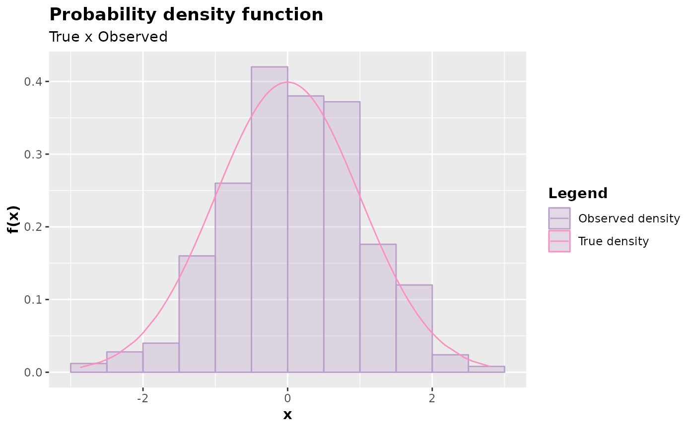

Inspects the probability function (discrete case) or probability density (continuous case) by comparing the theoretical case with the observed one.
Usage
# S3 method for accept_reject
plot(
x,
color_observed_density = "#BB9FC9",
color_true_density = "#F890C2",
color_bar = "#BB9FC9",
color_observable_point = "#7BBDB3",
color_real_point = "#F890C2",
alpha = 0.3,
hist = TRUE,
...
)Arguments
- x
An object of class
accept reject- color_observed_density
Observed density color (continuous case).
- color_true_density
True histogram density color (continuous case)
- color_bar
Bar chart fill color (discrete case)
- color_observable_point
Color of generated points (discrete case)
- color_real_point
Color of real probability points (discrete case)
- alpha
Bar chart transparency (discrete case) and observed density (continuous case)
- hist
If
TRUE, a histogram will be plotted in the continuous case, comparing the theoretical density with the observed one. IfFALSE,ggplot2::geom_density()will be used instead of the histogram.- ...
Additional arguments.
Value
An object of class gg and ggplot from the package ggplot2.
The function plot.accept_reject() expects an object of class
accept_reject as an argument.
Details
The function plot.accept_reject() is responsible for plotting the
probability function (in the discrete case) or the probability density (in
the continuous case), comparing the theoretical case with the observed one.
It is useful, therefore, for inspecting the quality of the samples generated
by the acceptance-rejection method. The returned plot is an object of classes
gg and ggplot. Easily, you can further customize the plot.
The function plot.accept_reject(), or simply plot(), constructs the plot
for inspection and expects an object of class accept_reject as an argument.
Examples
x <- accept_reject(
n = 1000L,
f = dbinom,
continuous = FALSE,
args_f = list(size = 5, prob = 0.5),
xlim = c(0, 10)
)
plot(x)
y <- accept_reject(
n = 500L,
f = dnorm,
continuous = TRUE,
args_f = list(mean = 0, sd = 1),
xlim = c(-4, 4)
)
plot(y)
